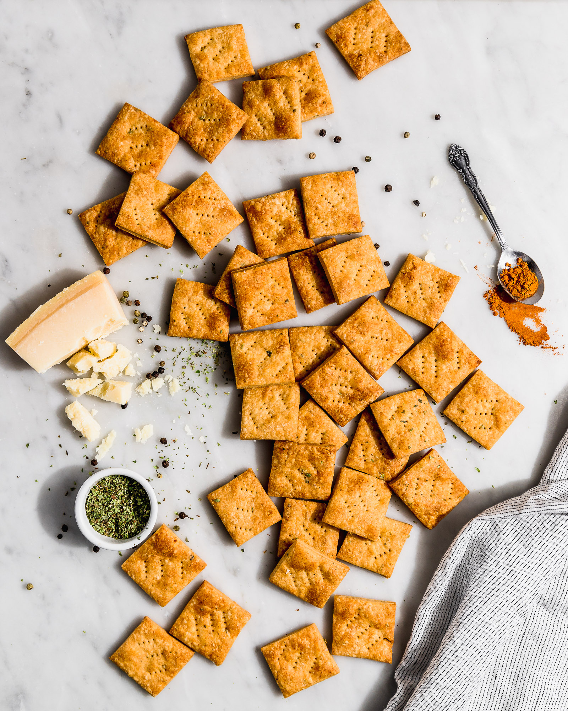

Bruschettas Italianas
Te presentamos la maravillosa receta de las Bruschettas Italianas. Este plato es una auténtica joya de la cocina de Italia, concretamente, originaria de la bella región de Toscana. Consiste en pan tostado cubierto con ingredientes frescos, tradicionalmente tomates, ajo y albahaca, pero las posibilidades son infinitas. Las Bruschettas representan la esencia de la gastronomía italiana: sabores simples pero robustos, y el uso de ingredientes frescos y de alta calidad.
- Baguette
- Tomates maduros
- Diente de ajo
- 6 hojas de albahaca fresca
- 2 cucharadas de aceite de oliva virgen extra
- Sal al gusto
- Pimienta negra al gusto
Comienza cortando la baguette en rebanadas de aproximadamente 2 cm de espesor para que se tuesten de manera uniforme. Corta los tomates por la mitad, retira las semillas y el jugo, y córtalos en cubos pequeños, colocándolos en un recipiente. Pica finamente el diente de ajo y añádelo a los tomates. Lava, seca y corta las hojas de albahaca en trozos pequeños, integrándolas también al recipiente. Agrega el aceite de oliva, sal y pimienta al gusto, y mezcla bien todos los ingredientes.
Calienta una sartén o plancha a fuego medio y tuesta las rebanadas de pan por ambos lados hasta que estén doradas. Finalmente, coloca la mezcla de tomate sobre cada rebanada y sirve inmediatamente.
Galletitas de queso
Estas galletitas saladas especiadas son un aperitivo crujiente y lleno de sabor, perfectas para acompañar una tabla de quesos o disfrutar como snack. La mezcla de mantequilla, queso parmesano y especias como orégano, ajo y paprika les da un toque aromático y delicioso, mientras que su textura fina y crocante las hace irresistibles.
- 110 g de mantequilla sin sal fría
- 2 cdtas de orégano
- 2 cdtas de ají color o paprika
- ¼ cdta de ajo en polvo
- 300 g de harina + extra para estirar la masa
- 70 g de queso parmesano recién rallado
- 1 cdta de sal
- 10 cdas de crema de leche
En un bol, mezcla la harina, la mantequilla cortada en cubitos, el ají de color, ajo en polvo, orégano y sal. Pellizca la mantequilla con los otros ingredientes hasta obtener una textura de arena húmeda. Agrega el queso parmesano y mezcla, luego incorpora la crema de leche hasta formar una masa homogénea. Refrigera la masa en un recipiente hermético durante 30 minutos; también puede congelarse hasta un mes.
Estira la masa sobre una superficie espolvoreada con harina hasta que tenga aproximadamente 2 mm de espesor. Corta en cuadrados de 5x5 cm o la forma deseada y marca con un tenedor para evitar que se inflen. Hornea a 180 °C durante 10-20 minutos hasta que estén doradas y crujientes. Si quedan restos de masa, humedece las manos, mezcla y vuelve a estirar hasta usar toda la masa.

Mini Strudels de Champiñón y Espinaca
Estos strudels de espinaca y champiñones son un aperitivo delicioso y elegante, ideales para entradas o picadas. La combinación de espinaca, champiñones y quesos crea un relleno cremoso y lleno de sabor, mientras que la masa horneada crujiente aporta la textura perfecta. Se pueden servir calientes o tibios, acompañados de una ensalada fresca.
- 250 gr de hojas de espinacas
- 250 gr de champiñones
- 1 cucharada de aceite de oliva
- 140 gr de queso crema, a temperatura ambiente
- 2 cucharadas de queso parmesano rallado
- Pimienta blanca molida Goumet al gusto
- 12 tapas de empanadas de horno
- Aceite de oliva para pincelar la masa
- Sésamo Gourmet para espolvorear
Lava y escurre bien las espinacas, pícalas finamente y haz lo mismo con los champiñones. Calienta el aceite de oliva en una sartén y saltea los champiñones hasta que estén tiernos. Añade la espinaca y cocina un par de minutos, luego incorpora el queso crema hasta que se derrita, agrega el queso parmesano y la pimienta al gusto, mezclando bien. Deja enfriar la preparación.
Precalienta el horno a 180 °C. Extiende las tapas de empanadas y dales forma ovalada de unos 12×25 cm. Pincela ligeramente con aceite de oliva, coloca una cucharada colmada del relleno en cada masa y enrolla como brazo de reina, cerrando los bordes hacia adentro. Coloca los rollos en una bandeja de horno aceitada o con papel manteca, pincela con aceite y espolvorea con sésamo. Hornea durante 20 minutos o hasta que estén dorados y sirve calientes o tibios.
Canapés Fríos
Estos canapés variados son perfectos para aperitivos elegantes y fáciles de preparar. Combinan sabores frescos y texturas distintas: palmitos suaves, pechuga de pavo con almendras crujientes, tomates jugosos con ají y camarones delicados. Ideales para fiestas, reuniones o celebraciones donde quieras impresionar sin complicarte en la cocina.
- 8 lonjas de pan de molde blanco para sándwich
- 1 taza de mayonesa normal o light
- 1 cdta de Eneldo Gourmet
- 1 cdta de Orégano Molido Gourmet
- 1 cdta de Pimentón Paprika Gourmet
- ¼ cdta de Pimienta Negra Molida Gourmet
- 4 tallos de palmitos
- 2 cucharadas de Ciboulette Gourmet picado
- 6 lonjas de pechuga de pavo
- 20 almendras tostadas (pueden ser laminadas)
- 2 tomates grandes
- 1 cdta de Sal de Mar Gourmet
- 2 ajíes verdes grandes, sin pepas ni nervios, picados en cubos pequeños
- 20 colas de camarones cocidos
Corta 60 círculos de pan de molde usando un cortador redondo de aproximadamente 4 cm. Divide la mayonesa en 4 recipientes y mezcla en cada uno uno de los condimentos: eneldo, orégano, pimentón y pimienta negra, respectivamente.
Para los canapés de palmitos, corta los palmitos en rodajas de ½ cm, unta 20 círculos de pan con la mayonesa de pimienta negra, coloca las rodajas de palmito y espolvorea con ciboulette. Para los canapés de pavo, corta 20 círculos de pechuga de pavo, unta 20 círculos de pan con la mayonesa con pimentón, coloca la pechuga de pavo y decora con almendras tostadas.
Para los canapés de tomate, corta los tomates en lonjas delgadas, espolvorea con sal y deja reposar 10 minutos sobre papel absorbente. Luego corta 20 círculos de tomate, unta 20 círculos de pan con la mayonesa con orégano, coloca el tomate y decora con ají verde picado. Finalmente, para los canapés de camarones, unta 20 círculos de pan con la mayonesa con eneldo y coloca una cola de camarón sobre cada uno.